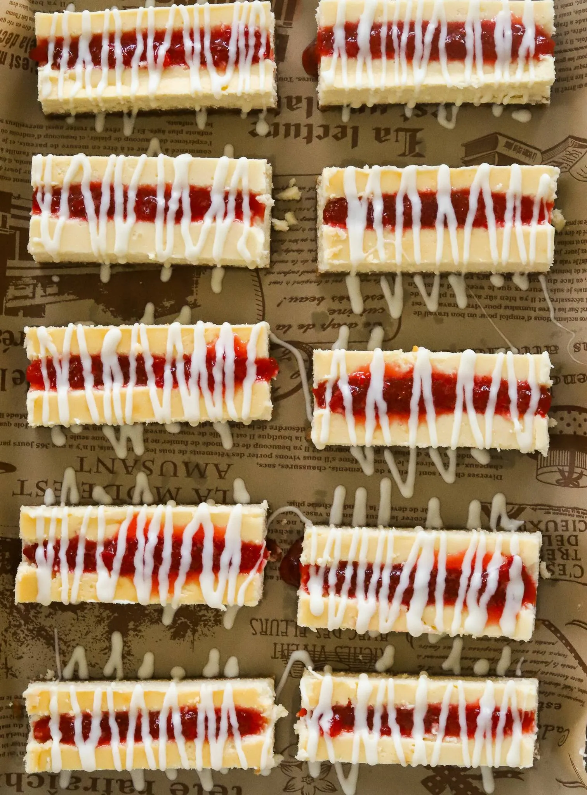

Dessert
Strawberry Cheese Cake Bars
- Prep Time: 1 hour
- Cook Time: 1 hour
- Total Time: 2 hours
- Yields: 12 bars
These Strawberry Jam Filled Cheesecake Bars are my take on
the nostalgic Philadelphia Cream Cheese Cheesecake Bars that
I adored as a kid! Although they were sadly discontinued,
this recreation has the same creamy, dreamy flavor with
homemade strawberry jam and a drizzle of white chocolate
but EVEN BETTER. Trust me, each bite is a trip down memory lane!
Jump to Recipe
Strawberry Cheese Ckae Bars
These Strawberry Jam Filled Cheesecake Bars are my take on the
nostalgic Philadelphia Cream Cheese Cheesecake Bars that I adored
as a kid! Although they were sadly discontinued, this recreation
has the same creamy, dreamy flavor with homemade strawberry jam
and a drizzle of white chocolate but EVEN BETTER. Trust me, each
bite is a trip down memory lane!
Ingredients
Cheesecake
- 24 ounces cream cheese, room temperature
- 1 cup granulated white sugar
- 1 1/2 tablespoons all-purpose flour
- 1/2 cup sour cream, room temperature
- 1/4 cup heavy cream
- 3 large eggs, room temperature
- 2 teaspoons vanilla extract
- 1/8 teaspoon salt
Crust
- 1 1/4 cup graham cracker crumbs, very fine
- 6 tablespoons unsalted butter, melted
- 3 tablespoons granulated white sugar
Stawberry Jam
- 16 ounces fresh strawberries, finely diced
- 1/2 cup granulated white sugar
- squeeze of lemon juice
Other
- 1/4 cup white chocolate, melted
Instructions
Prepare The Crust
-
In a medium bowl, combine the graham cracker crumbs,
melted butter, and granulated sugar. Mix until the
crumbs are evenly moistened.
-
Press the mixture firmly into the bottom of the prepared
baking pan to form an even layer. Use the bottom of a
measuring cup or a flat object to pack it tightly.
Make The Cheesecake Filling:
-
Preheat your oven to 325°F (163°C) and line a 9x9-inch square
baking pan with parchment paper, leaving some overhang for easy
removal.
-
In a large bowl, beat the room-temperature cream cheese until
smooth and creamy.
-
Add the granulated sugar and flour, and mix until well combined.
-
Mix in the sour cream, heavy cream, vanilla extract, and salt
until smooth.
-
Add the eggs one at a time, mixing on low speed after each
addition until just combined. Do not overmix.
Bake The Crust
-
Pour the cheesecake filling over the crust, spreading it evenly
with a spatula.
-
Bake for 35-40 minutes, or until the center is set but still
slightly jiggly.
-
Turn off the oven, crack the oven door open, and let the
cheesecake cool in the oven for 1 hour to prevent cracking.
-
After 1 hour, remove the cheesecake from the oven and let it
cool to room temperature. Then, refrigerate for at least 4
hours or overnight.
Make The Stawberry Jam:
-
While the cheesecake is chilling, combine the diced strawberries
, granulated sugar, and lemon juice in a medium saucepan.
-
Cook over medium heat, stirring occasionally, until the
strawberries break down and the mixture thickens to a jam-like
consistency, about 15-20 minutes.
-
Remove from heat and let the jam cool completely.
Assemble The cheesecake Bars:
-
Once the cheesecake is fully chilled, remove it from the pan
using the parchment paper overhang and place it on a cutting
board.
-
Cut the cheesecake into rectangular bars.
-
Using a sharp knife, carve out a small strip from the center
of each bar, being careful not to go all the way through the
cheesecake.
-
Fill the carved out strip with the cooled strawberry jam.
-
Melt the white chocolate in a microwave-safe bowl,
microwaving in 30-second intervals and stirring until
smooth.
-
Drizzle the melted white chocolate over the top of each bar.
-
Let the bars set for a few minutes to allow the white
chocolate to harden.
-
Serve the strawberry jam-filled cheesecake bars chilled and
enjoy!